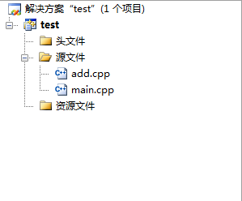
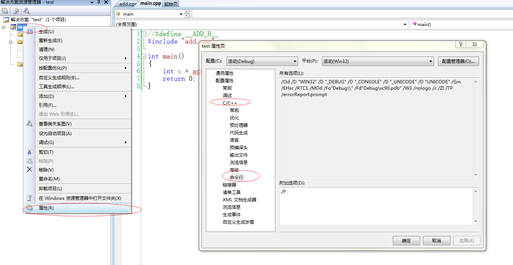

前段时间一个刚转到C语言的同事问我，为什么C会多一个头文件，而不是像Java和Python那样所有的代码都在源文件中。我当时回答的是C是静态语言很多东西都是需要事先定义的，所以按照惯例我们是将所有的定义都放在头文件中的。事后我再仔细想想，这个答案并不不能很好的说明这个问题。所以我在这将关于这个问题的相关内容写下来，希望给大家一点提示，也算是一个总结
include语句的本质
要回答这个问题，首先需要知道C语言代码组织问题，也就是我比较喜欢说的多文件，这个不光C语言有，几乎所有的编程语言都有，比如Python中使用import来导入新的模块，而C中我们可以简单的将include等效为import。那么问题来了，import后面的模块名称一般是相关类和对象的的的声明和实现模块，而include后面只能跟一个头文件，只有声明。其实这个认识是错误的，C语言并没有规定include只能包含头文件，include的本质是一个预处理指令它主要的工作是将它后面的相关文件整个拷贝并替换这个include语句，比如下面一个例子
1 | //add.cpp |
在这个例子中我们在add.cpp文件中先定义一个add函数，然后在main文件中先包含这个源代码文件，然后在main函数中直接调用add函数，项目的目录结构如下:

在这里给大家说一个技巧，在VS中右击项目—>选择属性——>C++——>命令行，在编辑框中填入 /P,然后打开对应的文件点击编译（这里不能选生成，由于/P选项只会进行预处理并编译这一个文件，其余.cpp文件并没有编译，选生成一定会报错）

点击编译以后它会在项目的源码目录下生成一个与对应cpp同名的.i文件，这个文件是预处理之后生成的源文件。这个技巧对于调试检查和理解宏定义的代码十分重要，我们看到预处理之后的代码如下:
1 | int add(int x, int y) |
这段代码中我把注释给删掉了，注释表示后面的代码段都是来自于哪个文件的，从代码文件来看，include被替换掉了，正是用add.cpp文件中的代码替换了，去掉之前添加的/P参数，再次点击编译，发现它报错了，报的是add函数重复定义。因为编译add.cpp时生成的add.obj中有函数add的定义，而在main文件中又有add函数的定义。我们将代码做简单的改变就可以解决这个问题，最终的代码如下:
1 | //add.cpp |
在这段代码中加了一个宏定义，如果没有定义这个宏则包含add的实现代码，否则不包含。然后在main文件中定义这个宏，表示在main中不包含它的实现，但是不管怎么样都需要在add.cpp中加上add函数的定义，否则在调用add函数时会报add函数未定义的变量或者函数
上述写法的窘境
上面只引入一个文件，我们来试试引入两个, 在这个项目中新增一个mul文件来编写一个乘法的函数
1 |
|
上面的乘法函数利用之前的add函数，乘法是多次累加的结果，在上面的代码中由于要使用add函数，所以先包含add.cpp文件，并定义宏保证没有重复定义，然后再写对应的算法。最后在main中引用这个函数
1 |
|
注意这里对应宏定义和include的顺序，稍有不慎就可能会报错，一般都是报重复定义的错误，如果报错还请使用之前介绍的/P选项来排错
到这里是不是觉得这么写很麻烦？其实我在准备这些例子的时候也是这样，很多时候没有注意相关代码的顺序导致报错，而针对重复定义的报错很难排查。而这还仅仅只引入了两个文件，一般的项目中几时上百个文件那就更麻烦了
头文件的诞生
从上面的两个例子来看，其实我们只需要包含对应的声明，不需要也不能包含它的实现。很自然的就想到专门编写一个文件来包含所有的定义，这样要使用对应的函数或者变量的时候直接包含这个文件就可以了，这个就是我们所说的头文件了。至于为什么叫做头文件，这只是一个约定俗成的叫法，而以.h来命名也只是一个约定而已，我们经常看到C++的开源项目中将头文件以.hpp命名。这个真的只是一个约定而已，我们也看到了上面的例子都包含的是cpp文件，它也能编译过。
其实针对所有的变量、类、函数可以都在统一的头文件中声明，但是这么做又带来一个问题，如果我要看它的实现怎么办，那么多个文件我不可能一个个的找吧。所以这里又有一条约定，每个模块都放在统一的cpp文件中而该文件中相关内容的声明则放到与之同名的头文件中
其实我觉得这个原则在所有静态的、需要区分声明和实现的语言应该是都适用的，像我知道的汇编语言，特别是win32 的宏汇编，它也有一个头文件的思想。
C语言编译过程
在上面我基本上回答了为什么需要一个头文件，但是本质的问题还是没有解决，为什么像Python这类动态语言也有对应模块、多文件，但是它不需要像C那样要先声明才能使用？
要回答这个问题需要了解一点C/C++的编译过程。
C/C++编译的时候先扫描整个文件有没有语法错误，然后将C语句转化为汇编，当碰到不认识的变量、类、函数、对象的命名时，首先查找它有没有声明，如果没有声明直接报错，如果有，则根据对应的定义空出一定的存储空间并进行相关的指令转化：比如给变量赋值时会转化为mov指令并将、调用函数时会使用call指令。这样就解释了为什么在声明时指定变量类型，如果编译器不知道类型就不知道该用什么指令来替换C代码。同时会将对应的变量名作为符号保留。然后在符号表（这个符号表时每个代码文件都有一个）中填入该文件中定义的相关内容的符号以及它所在的首地址。最终如果未发生错误就生成了一个对应的.obj文件，这就是编译的基本过程。
编译完成之后进行链接，首先扫描所有的obj文件，先查找main函数，然后根据main函数中代码的执行流程来一一组织代码结构，当碰到之前保留的符号时，去所有的obj中的符号表中根据变量符号查找对应的地址，当它发现找到多个地址的时候就会报重复定义的错误。如果未找到对应的符号就会报函数或者变量已经声明但是未定义。找到之后会将之前obj中的符号替换为地址，比如将 mov eax num 替换成 mov eax, 0x00ff7310这样的指令。最终生成一个PE文件。
根据上面的编译过程来看，它事先会扫描文件中所有的变量定义，所以必须让编译器知道这个变量是什么。而Python是边解释边执行，所以事先不需要声明，只要执行到该处能找到定义即可。它们这点区别就解释了为什么C/C++需要声明而Python不用。